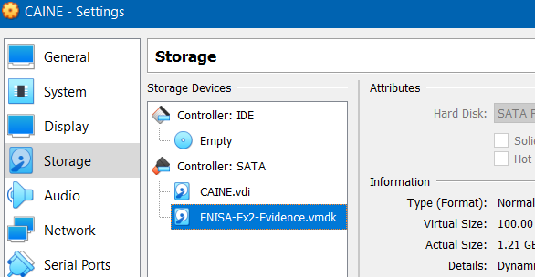
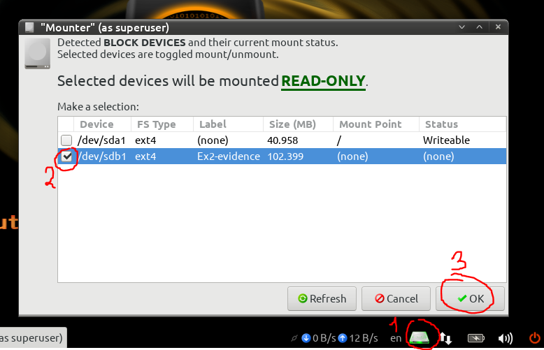

I will be showcasing how to setup CAINE for a virtual Forensics lab. CAINE is a great tool for digital forensics as it comes pre-packaged with tools such as Autopsy and Volatility. Also I will do a quick demo following the training “Forensic Analysis: Network Incident Response” by ENISA (https://www.enisa.europa.eu/topics/trainings-for-cybersecurity-specialists/online-training-material/technical-operational/#Forensic_analysis_Network_Incident_Response).
Requirements
For this setup, you will need the following:
- CAINE iso (https://www.caine-live.net/)
- VirtualBox (https://www.virtualbox.org/)
- An evidence drive (Example: http://enisa.europa.eu/ftp/ENISA-Ex2-Evidence.vmdk)
Setup
You don’t have to install CAINE since normally you would use it live but it’ll make things faster for exercises within a virtual environment.
If you do install CAINE inside a VM then you may encounter a problem with GRUB. To fix the GRUB bootloader issue, please follow the tutorial at https://www.youtube.com/watch?v=atHr2OGCQiQ&t=1s&ab_channel=CyberEntirety
Other than that you should be able to boot up your CAINE VM with ease. You may want to change the display resolution to suit your screen. Alternatively, you can install the virtualbox guest additions which automatically adjusts the screen resolution for you.
If you have installed CAINE, make sure you take a snapshot of your CAINE VM after your setup.
Demo
For this demo I will be using an image from ENISA’s training website on “Forensic Analysis: Network Incident Response” (link provided in the Requirements)
Preparing the evidence drive
Before booting up your CAINE VM, you need to add the evidence vmdk drive as a storage device in the CAINE VM settings.
 Figure 1: CAINE VM Storage Settings
Boot up and login to your CAINE VM. Next thing you’ll need to do is mount the evidence image. The safest way to mount an evidence drive is by using the Mounter utility in CAINE on the bottom right of the taskbar; this makes sure the device is mounted in read-only to avoid corrupting the drive.
 Figure 2: Evidence Mount
Alternatively, you can mount the connected drive through the commands:
1
2
lsblk # to check if device is in sdb1 (it should be by default)
sudo mount /dev/sdb1
Now that we have the evidence drive mounted, we’ll copy the pfsense and dhcpsrv directories to our CAINE VM.
1
2
3
4
5
6
# Create empty directory
cd ~/Desktop/
mkdir forensic-demo && cd forensic-demo
# Copy directories to current directory
cp -r /media/sdb1/pfsense ./
cp -r /media/sdb1/dhcpsrv ./
After this step, you can disconnect the mounted drive if you wish.
Tip: If your VM is slow, you might want to try to ssh into it from your host machine.
1
2
sudo apt-get install openssh-server # install ssh server
sudo systemctl status sshd # Check status of ssh daemon
Configure SSH port forwarding in your virtual box network settings: Set the guest port to 22 and your host port to 2222 (or any other port that’s not in use).
Collecting network evidence
In the pfsense directory you will see 3 archives:
log.tar.gz: firewall logsnfdump.tar.gz: netflow dumpsquid-logs.tar.gz: squid proxy logs
We will need to use nfdump to read the netflow dump. Install it with sudo apt-get install nfdump.
Network forensic analysis: nfdump
We are given that the system with IP 192.168.5.100 has been compromised. Using nfdump we will look for clues about the connections related to the victim IP.
We’ll sort by number of flows with -O flows and filter with ip 192.168.5.100 and proto udp:
1
2
3
4
5
6
7
8
9
10
11
$ nfdump -o long -R ./nfdump -A proto,dstport -O flows 'ip 192.168.5.100 and proto udp' | head
Date first seen Duration Proto Src IP Addr:Port Dst IP Addr:Port Flags Tos Packets Bytes Flows
2016-08-16 11:43:05.180 43254.352 UDP 0.0.0.0:0 -> 0.0.0.0:53 ...... 0 4406 289737 3970
2016-06-28 02:24:32.625 4307914.637 UDP 0.0.0.0:0 -> 0.0.0.0:8572 ...... 0 496 47954 234
2016-08-16 11:43:00.596 40562.491 UDP 0.0.0.0:0 -> 0.0.0.0:5355 ...... 0 239 13582 121
2016-06-27 20:54:55.360 4309508.877 UDP 0.0.0.0:0 -> 0.0.0.0:3544 ...... 0 507 43359 63
2016-08-16 11:50:31.397 11653.753 UDP 0.0.0.0:0 -> 0.0.0.0:1900 ...... 0 92 14766 46
2016-08-16 11:50:08.447 11791.646 UDP 0.0.0.0:0 -> 0.0.0.0:3478 ...... 0 133 7448 30
2016-06-28 04:24:32.963 4300365.056 UDP 0.0.0.0:0 -> 0.0.0.0:40018 ...... 0 87 15045 28
2016-08-16 11:49:32.177 40336.276 UDP 0.0.0.0:0 -> 0.0.0.0:443 ...... 0 24 1104 24
2016-06-27 19:50:20.901 4327722.503 UDP 0.0.0.0:0 -> 0.0.0.0:137 ...... 0 415 34098 23
The most udp packets are from DNS traffic (port 53). As for the other ports:
8572: Unassigned5355: LLMNR service3544: Teredo (RFC 4380)1900: UPnP3478: VoIP STUN40018: Used by Microsoft443: HTTPS137: NetBIOS
I used SpeedGuide as a reference for the ports.
Nothing too suspicious so let’s check the TCP packets.
1
2
3
4
5
6
7
8
9
10
11
$ nfdump -o long -R ./nfdump -A proto,dstport -O bytes 'ip 192.168.5.100 and proto tcp' | head
Date first seen Duration Proto Src IP Addr:Port Dst IP Addr:Port Flags Tos Packets Bytes Flows
2016-06-27 20:08:32.485 4319017.104 TCP 0.0.0.0:0 -> 0.0.0.0:12345 ...... 0 1.1 M 1.5 G 91
2016-06-27 23:02:11.313 4297677.538 TCP 0.0.0.0:0 -> 0.0.0.0:22 ...... 0 75846 89.0 M 250
2016-06-27 22:15:20.176 4294809.218 TCP 0.0.0.0:0 -> 0.0.0.0:50087 ...... 0 25889 35.2 M 1
2016-06-27 21:08:52.091 4294720.356 TCP 0.0.0.0:0 -> 0.0.0.0:59694 ...... 0 21598 29.1 M 1
2016-06-27 20:19:51.126 4301177.540 TCP 0.0.0.0:0 -> 0.0.0.0:49964 ...... 0 15240 20.9 M 3
2016-06-27 22:15:39.248 4294701.500 TCP 0.0.0.0:0 -> 0.0.0.0:50082 ...... 0 14692 20.2 M 1
2016-06-27 21:05:43.972 4294783.806 TCP 0.0.0.0:0 -> 0.0.0.0:59628 ...... 0 14468 19.5 M 1
2016-06-28 00:37:49.495 4289492.757 TCP 0.0.0.0:0 -> 0.0.0.0:58838 ...... 0 295049 12.5 M 1
2016-06-27 22:12:42.597 4294667.462 TCP 0.0.0.0:0 -> 0.0.0.0:50064 ...... 0 8330 11.3 M 1
There’s a lot of traffic towards the unusual port 12345. Let’s see where this might lead us:
1
2
3
4
5
6
7
8
9
10
$ nfdump -o long -R ./nfdump -A proto,srcip,dstip,dstport 'src ip 192.168.5.100 and proto tcp and dst port 12345'
Date first seen Duration Proto Src IP Addr:Port Dst IP Addr:Port Flags Tos Packets Bytes Flows
2016-08-16 14:49:41.839 4194.136 TCP 192.168.5.100:0 -> 192.168.5.10:12345 ...... 0 2 92 2
2016-06-27 20:08:32.485 4319017.104 TCP 192.168.5.100:0 -> 36.98.102.89:12345 ...... 0 1.1 M 1.5 G 85
2016-08-16 14:49:44.104 4194.179 TCP 192.168.5.100:0 -> 192.168.5.15:12345 ...... 0 2 92 2
2016-08-16 15:59:31.538 0.115 TCP 192.168.5.100:0 -> 192.168.5.1:12345 ...... 0 2 92 2
Summary: total flows: 91, total bytes: 1496690321, total packets: 1122052, avg bps: 2772, avg pps: 0, avg bpp: 1333
Time window: 2016-06-27 02:18:14 - 2016-08-16 23:52:04
Total flows processed: 50089, Blocks skipped: 0, Bytes read: 3719736
Sys: 0.005s flows/second: 9987836.5 Wall: 0.003s flows/second: 16385018.0
The address 36.98.102.89:12345 is the destination of the suspicious traffic.
Now let’s investigate the traffic on the local network:
1
2
3
4
5
6
7
8
9
10
11
$ nfdump -o long -R ./nfdump -A proto,srcip,dstip -O flows 'ip 192.168.5.100 and proto tcp and dst net 192.168.5.0/24' | head
Date first seen Duration Proto Src IP Addr:Port Dst IP Addr:Port Flags Tos Packets Bytes Flows
2016-08-16 14:49:41.996 4207.123 TCP 192.168.5.100:0 -> 192.168.5.15:0 ...... 0 2824 129904 2824
2016-06-27 23:02:11.313 4297677.538 TCP 192.168.5.100:0 -> 192.168.5.10:0 ...... 0 78176 89.1 M 2572
2016-06-27 23:01:56.613 4297692.238 TCP 192.168.5.10:0 -> 192.168.5.100:0 ...... 0 48992 5.3 M 2408
2016-08-16 14:49:44.122 4189.718 TCP 192.168.5.100:0 -> 192.168.5.1:0 ...... 0 1893 87078 1893
2016-08-16 11:50:07.935 11798.417 TCP 208.73.211.70:0 -> 192.168.5.100:0 ...... 0 242 11132 121
2016-06-27 19:56:31.305 4303049.443 TCP 54.229.228.176:0 -> 192.168.5.100:0 ...... 0 34081 46.2 M 114
2016-06-27 20:08:32.485 4319017.104 TCP 36.98.102.89:0 -> 192.168.5.100:0 ...... 0 488224 45.0 M 84
2016-06-27 19:55:50.710 4313185.516 TCP 40.115.1.44:0 -> 192.168.5.100:0 ...... 0 850 489171 75
2016-06-27 21:00:14.196 4296132.010 TCP 93.184.220.239:0 -> 192.168.5.100:0 ...... 0 1679 1.6 M 61
There is a lot of traffic going to the tree addresses 192.168.5.15, 192.168.5.10 and 192.168.5.100.
1
2
3
4
5
6
7
8
9
10
11
$ nfdump -o long -R ./nfdump -A proto,srcip,dstip,dstport -O bytes 'ip 192.168.5.100 and proto tcp and dst net 192.168.5.0/24' | head
Date first seen Duration Proto Src IP Addr:Port Dst IP Addr:Port Flags Tos Packets Bytes Flows
2016-06-27 23:02:11.313 4297677.538 TCP 192.168.5.100:0 -> 192.168.5.10:22 ...... 0 75840 89.0 M 244
2016-06-27 22:15:20.176 4294809.218 TCP 13.107.4.50:0 -> 192.168.5.100:50087 ...... 0 25889 35.2 M 1
2016-06-27 21:08:52.091 4294720.356 TCP 13.107.4.50:0 -> 192.168.5.100:59694 ...... 0 21598 29.1 M 1
2016-06-27 20:19:51.126 4294440.801 TCP 54.229.228.176:0 -> 192.168.5.100:49964 ...... 0 15226 20.9 M 1
2016-06-27 22:15:39.248 4294701.500 TCP 54.229.228.176:0 -> 192.168.5.100:50082 ...... 0 14692 20.2 M 1
2016-06-27 21:05:43.972 4294783.806 TCP 13.107.4.50:0 -> 192.168.5.100:59628 ...... 0 14468 19.5 M 1
2016-06-28 00:37:49.495 4289492.757 TCP 36.98.102.89:0 -> 192.168.5.100:58838 ...... 0 295049 12.5 M 1
2016-06-27 22:12:42.597 4294667.462 TCP 13.107.4.50:0 -> 192.168.5.100:50064 ...... 0 8330 11.3 M 1
2016-06-27 22:01:12.808 4294888.784 TCP 13.107.4.50:0 -> 192.168.5.100:49913 ...... 0 7890 10.8 M 1
We see that there is a lot of ssh packets going to 192.168.5.10.
Let’s check the flows to other ports:
1
2
3
4
5
6
7
8
9
10
11
marwan@marwan-caine:~/Desktop/forensic-demo/pfsense$ nfdump -o long -R ./nfdump -A proto,srcip,dstip,srcport -O flows 'ip 192.168.5.100 and proto tcp and dst net 192.168.5.0/24' | head -O flows 'ip 192.168.5.100 and proto tcp and dst net 192.168.5.0/24' | head
Date first seen Duration Proto Src IP Addr:Port Dst IP Addr:Port Flags Tos Packets Bytes Flows
2016-08-16 14:49:39.451 4196.709 TCP 192.168.5.100:62604 -> 192.168.5.10:0 ...... 0 1918 88228 1918
2016-08-16 14:49:41.996 4196.428 TCP 192.168.5.100:41476 -> 192.168.5.15:0 ...... 0 1702 78292 1702
2016-08-16 14:49:43.757 4205.362 TCP 192.168.5.100:41477 -> 192.168.5.15:0 ...... 0 1122 51612 1122
2016-08-16 15:59:30.431 3.409 TCP 192.168.5.100:39690 -> 192.168.5.1:0 ...... 0 946 43516 946
2016-08-16 14:49:44.122 4189.609 TCP 192.168.5.100:39689 -> 192.168.5.1:0 ...... 0 944 43424 944
2016-08-16 14:49:41.507 4194.926 TCP 192.168.5.100:62605 -> 192.168.5.10:0 ...... 0 410 18860 410
2016-06-27 23:01:56.613 4297692.238 TCP 192.168.5.10:22 -> 192.168.5.100:0 ...... 0 46812 5.2 M 244
2016-08-16 11:50:07.935 11798.417 TCP 208.73.211.70:80 -> 192.168.5.100:0 ...... 0 242 11132 121
2016-06-27 19:56:31.305 4303049.443 TCP 54.229.228.176:80 -> 192.168.5.100:0 ...... 0 34081 46.2 M 114
We notice flows from unusual ports (62604, 41476, 41477, …) on IP 192.168.5.100. There might be some network scanning involved here. Let’s look at the traffic from port 62604:
1
2
3
4
5
6
7
8
9
10
11
$ nfdump -o long -R ./nfdump -O flows 'src ip 192.168.5.100 and src port 62604 and proto tcp and dst net 192.168.5.0/24' | head
Date first seen Duration Proto Src IP Addr:Port Dst IP Addr:Port Flags Tos Packets Bytes Flows
2016-08-16 14:49:39.686 4194.296 TCP 192.168.5.100:62604 -> 192.168.5.10:135 ....S. 0 1 46 1
2016-08-16 14:50:10.198 4163.306 TCP 192.168.5.100:62604 -> 192.168.5.10:53 ....S. 0 1 46 1
2016-08-16 14:50:10.145 4163.300 TCP 192.168.5.100:62604 -> 192.168.5.10:22 ....S. 0 1 46 1
2016-08-16 14:50:10.360 4163.307 TCP 192.168.5.100:62604 -> 192.168.5.10:53 ....S. 0 1 46 1
2016-08-16 14:50:10.308 4163.300 TCP 192.168.5.100:62604 -> 192.168.5.10:22 ....S. 0 1 46 1
2016-08-16 15:59:36.160 0.000 TCP 192.168.5.100:62604 -> 192.168.5.10:1247 ....S. 0 1 46 1
2016-08-16 15:59:36.160 0.000 TCP 192.168.5.100:62604 -> 192.168.5.10:49156 ....S. 0 1 46 1
2016-08-16 15:59:36.159 0.000 TCP 192.168.5.100:62604 -> 192.168.5.10:106 ....S. 0 1 46 1
2016-08-16 15:59:36.159 0.000 TCP 192.168.5.100:62604 -> 192.168.5.10:2033 ....S. 0 1 46 1
This indeed looks like a port scan as we’re seeing 1 packet going to common ports.
Network forensic analysis: Squid Proxy
The Squid proxy files are big, especially the cache.log (692M), so it’s probably better to filter out “normal” traffic. For instance, requests to de.archive.ubuntu.com are likely to be associated with Ubuntu packages being downloaded. Same thing goes for opensuse, openSUSE and novell.com. We can write down filters in a file that can be passed to grep:
1
2
3
4
5
6
7
8
9
10
11
12
13
14
15
16
$ cat filter.txt
ubuntu.com
opensuse
openSUSE
novell.com
$ grep -v access.log -F -f filter.txt
1467994225.265 100 192.168.5.10 TCP_MISS/301 661 GET http://www.dfn-cert.de/index.html - HIER_DIRECT/193.174.13.92 text/html
1467994225.371 96 192.168.5.10 TCP_TUNNEL/200 17744 CONNECT www.dfn-cert.de:443 - HIER_DIRECT/193.174.13.92 -
1467998887.429 3 193.174.12.200 TCP_DENIED/403 3926 GET http://www.heise.de/ - HIER_NONE/- text/html
1468234574.617 266 192.168.5.15 TCP_MISS/200 185310 GET http://www.heise.de/ - HIER_DIRECT/193.99.144.85 text/html
1469198547.567 306 192.168.5.15 TCP_REFRESH_MODIFIED/200 181483 GET http://www.heise.de/ - HIER_DIRECT/193.99.144.85 text/html
1471356766.997 43 192.168.5.10 TCP_MISS/503 4151 GET http://bl/? - HIER_NONE/- text/html
1471356988.431 59783 192.168.5.10 TCP_MISS/503 4163 GET http://blog.mysportclub.ex/wp-content/uploads/hk/files/binaries-only.zip - HIER_DIRECT/54.229.228.176 text/html
1471357647.942 60185 192.168.5.10 TCP_MISS/503 4143 GET http://54.229.228.176/wp-content/uploads/hk/files/binaries-only.zip - HIER_DIRECT/54.229.228.176 text/html
The GET request at the last line shows that binaries-only.zip file has been downloaded from 54.229.228.176 on Tue Aug 16 2016 16:27:27 GMT+0200 (Central European Summer Time) (converted UNIX time 1471357647.942).
The cache.log doesn’t give us any additional information. Here is the updated the filter file if you want to look through the log:
$ cat filter.txt ubuntu.com opensuse openSUSE novell.com ERROR Starting Squid Squid Cache CPU Usage Maximum Resident Size Page faults Service Name: squid FATAL
Conclusion
To recap, we managed to spot a few suspicious activities when analysing the nfdump files:
- Extensive traffic to
36.98.102.89:12345 - Extensive SSH traffic to
192.168.5.10 - port scans (notably from
192.168.5.100:62604)
And we’ve seen on the access.log that a file binaries-only.zip was downloaded from 54.229.228.176 on Tue Aug 16 2016 16:27:27 GMT+0200.
I hope you found this tutorial and demo interesting. I have enjoyed reading through the ENISA’s toolset on Network Incident Response and trying out CAINE. Even though the documents on their website are outdated, they still remain quite useful for those interested in cybersecurity.